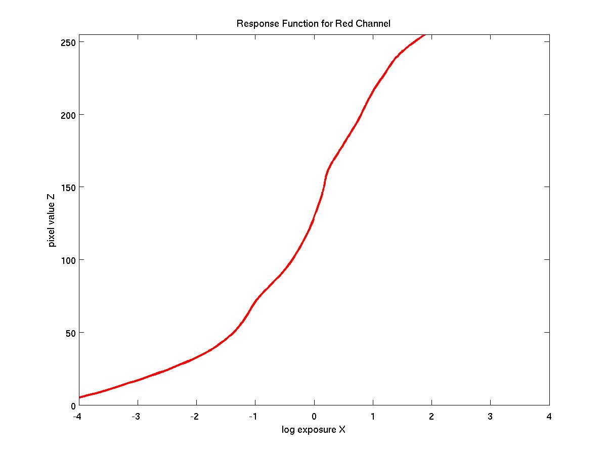
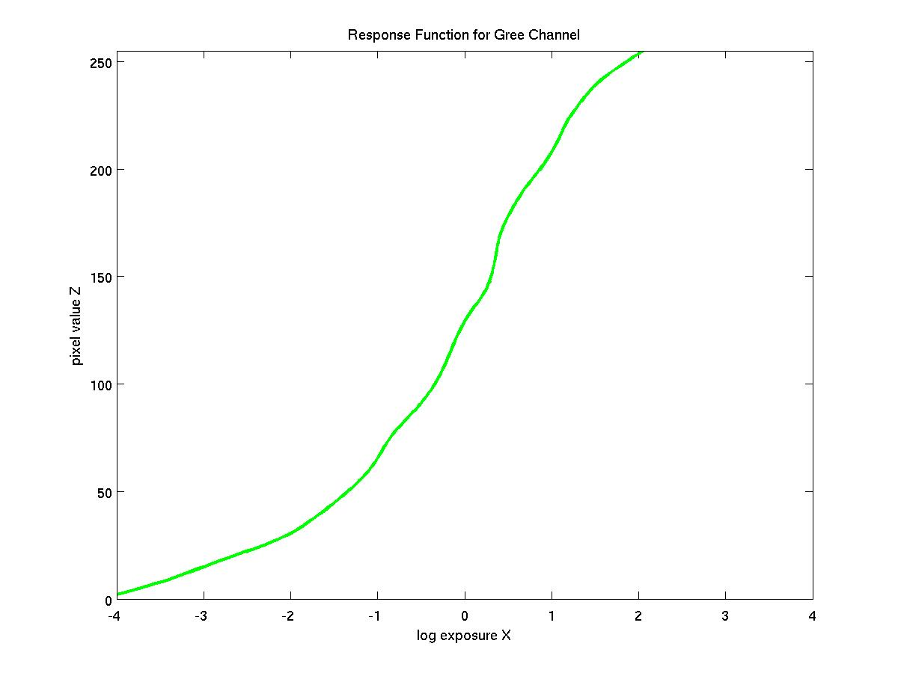
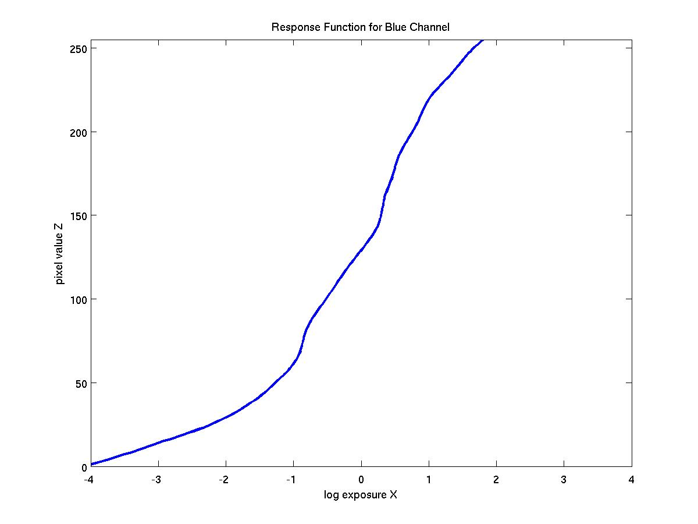
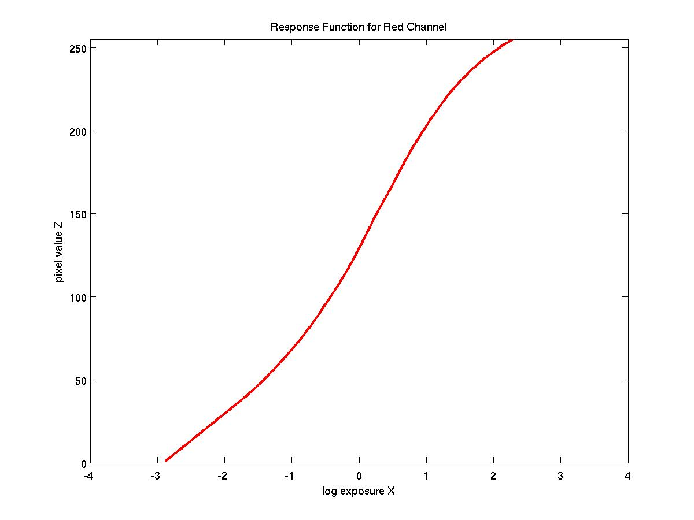
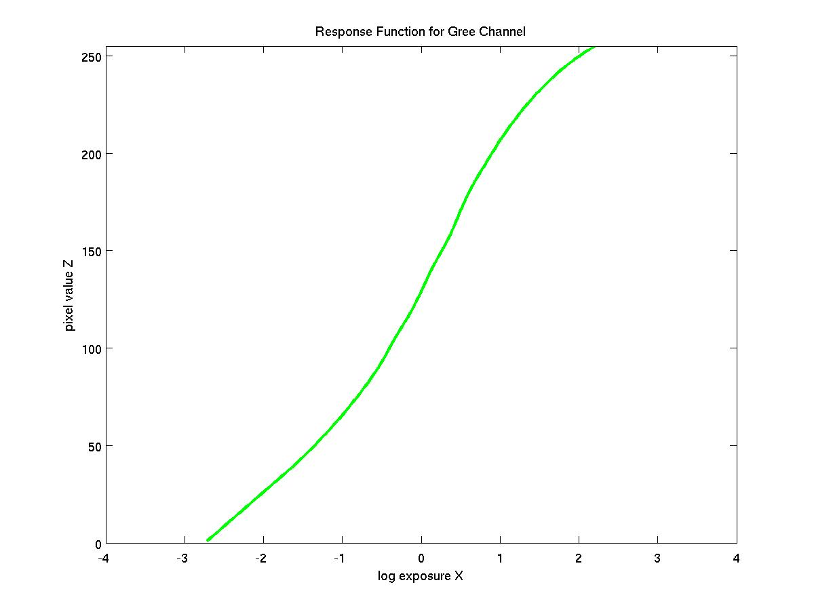
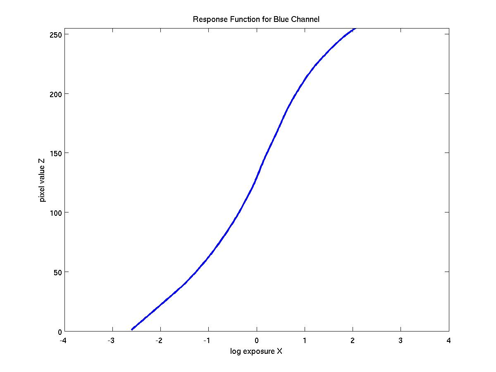

Contents
- Home
- Introduction
- Implementation
- Image Acquisition
- Simple Pixel Averaging
- Response Curves
- Tone Mapping (Matlab)
- Reinhard's Local Tone Mapping
- Reinhard's Global Tone Mapping
- Ward's Algorithm
- Results Comparison 1
- Results Comparison 2
- Datasets
- Code
- Git Logs
- References
|
Response Curves
The camera response curve was estimated by solving the SVD. Below are recovered response curves from 2 sets of images on the same camera with a 'smoothness' factor applied=50.
Image Set 1


|
Recovered Response Curves (R,G,B)



|
|
Image Set 2


|
Recovered Response Curves (R,G,B)



|
|